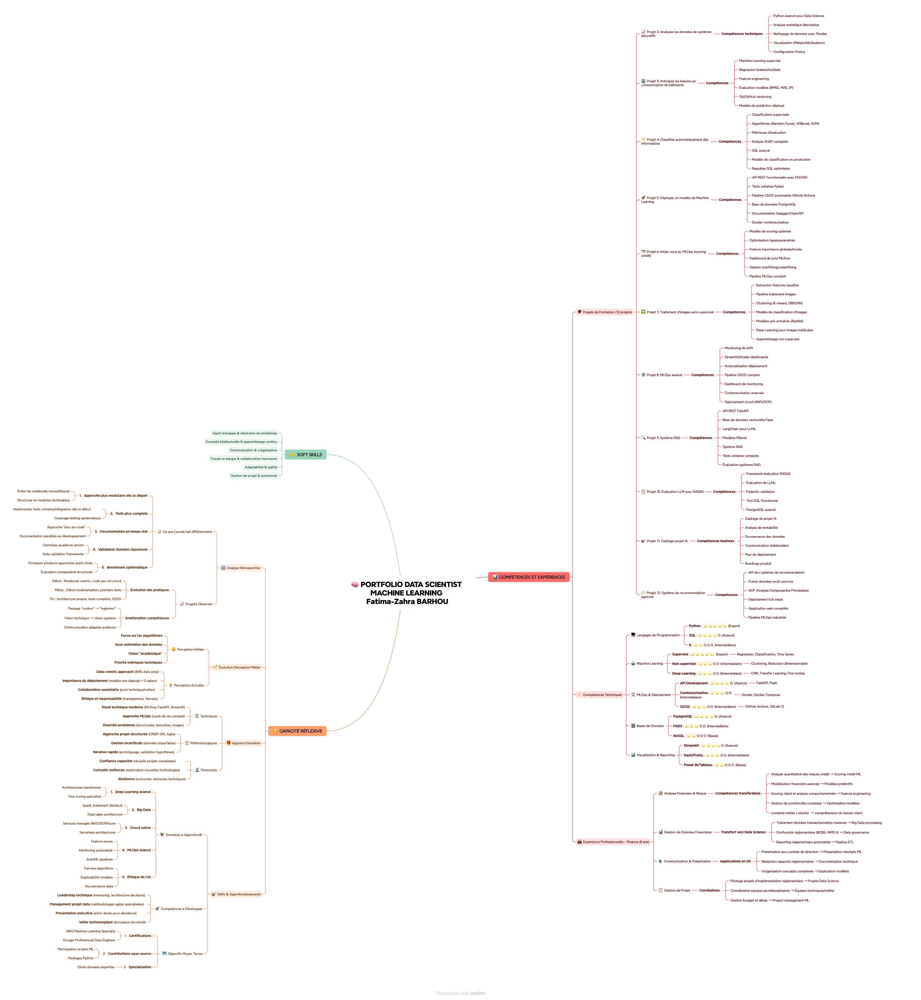

Passionnée par la résolution de problèmes complexes avec l'IA et le Machine Learning. Forte de 8+ ans d'expérience en Finance, je transforme les données en solutions intelligentes.
Diplômée d'un Master en Finance Internationale et d'une formation Data Science & Machine Learning niveau Master, je combine expertise métier et compétences techniques avancées.
Mon parcours unique en Corporate Finance & Banking (8+ ans) me permet de comprendre les enjeux business et de créer des solutions IA à forte valeur ajoutée.
Application full-stack avec système de recommandation basé sur l'ACP et fusion de données multi-sources.
Cadrage stratégique complet d'un projet de recommandation vestimentaire par IA : application mobile analysant des photos pour recommander des articles similaires. Analyse de faisabilité technique, architecture Azure, ROI (936k€/an), conformité RGPD, et roadmap de déploiement progressif.
Contexte : CA de 10,4M€, impact estimé +14% CA Web, 275 références sur 3 catégories prioritaires
Approche : Modèles pré-entraînés (CLIP/ViT) + recherche vectorielle, comparaison avec approche multimodale LLM
Livrables : Architecture technique, dimensionnement coûts, projection ROI 3 ans, conformité RGPD/DPIA
Framework d'évaluation pour LLMs avec RAGAS, SQL Tool développement et validation Pydantic.
Chatbot intelligent avec architecture RAG utilisant LangChain, Faiss et modèles Mistral.
Déploiement cloud avec monitoring de drift, dashboards interactifs et pipeline CI/CD complet.
Deep Learning avec transfer learning (ResNet), clustering et apprentissage semi-supervisé.
Pipeline MLOps avec MLflow, optimisation d'hyperparamètres et feature importance.
API REST complète avec tests Pytest, PostgreSQL, CI/CD GitHub Actions et Docker.
Modèles de classification avec Random Forest, XGBoost, SVM et analyse SHAP pour l'interprétabilité.
Modèles de régression pour anticiper la consommation de bâtiments avec feature engineering.
Analyse statistique descriptive complète avec visualisations et nettoyage de données.
Vue d'ensemble de mon écosystème de compétences en Data Science et Machine Learning

💡 Cliquez sur l'image pour l'agrandir en plein écran
Approche analytique et méthodique pour décomposer des problèmes complexes en solutions actionnables.
Veille technologique constante et capacité d'adaptation rapide aux nouvelles technologies.
Vulgarisation de concepts techniques et storytelling efficace auprès des stakeholders.
Expérience de travail en équipes transverses et coordination projets complexes.
Capacité d'adaptation et gestion efficace des priorités dans des environnements dynamiques.
Gestion de projet de bout en bout avec capacité à prendre des initiatives.
Je suis actuellement à la recherche de nouvelles opportunités en Data Science et Machine Learning. N'hésitez pas à me contacter !